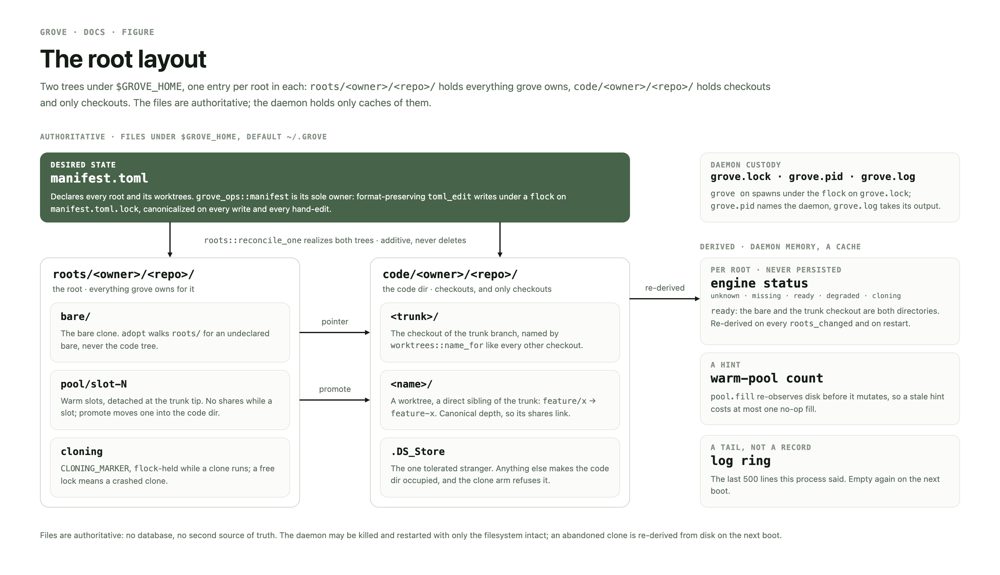
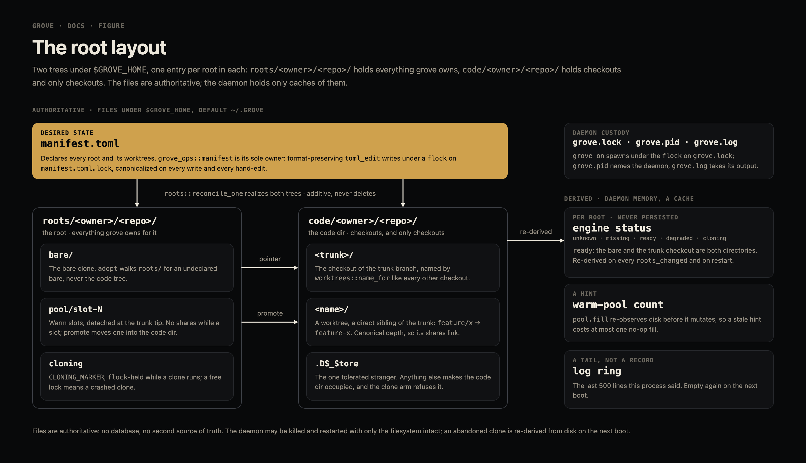
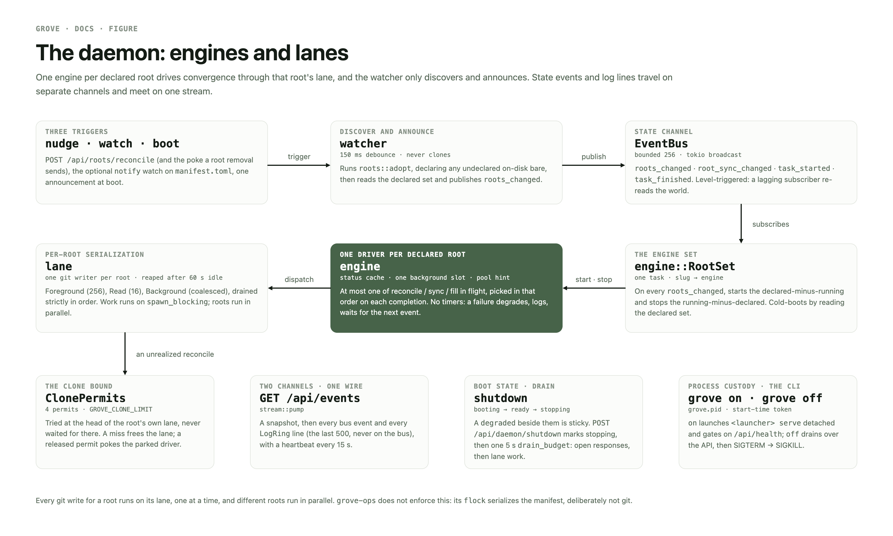
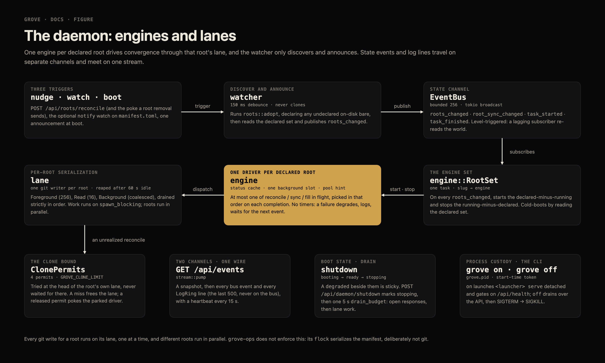
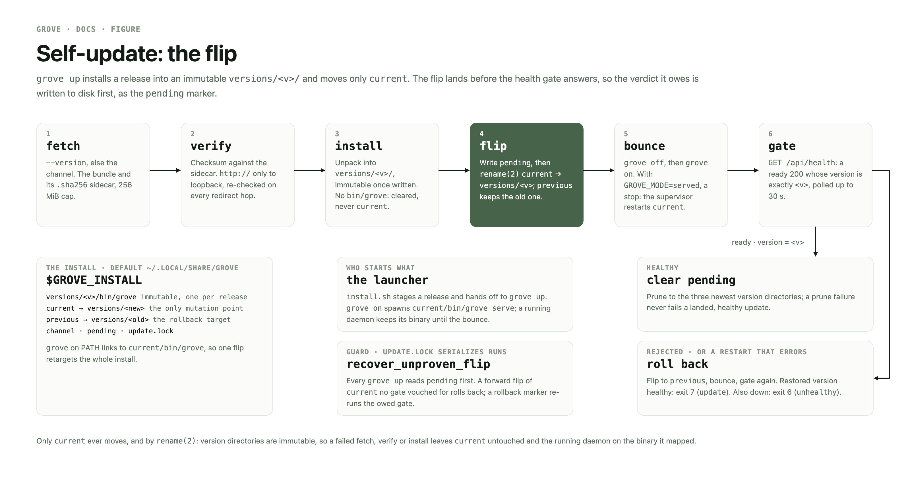
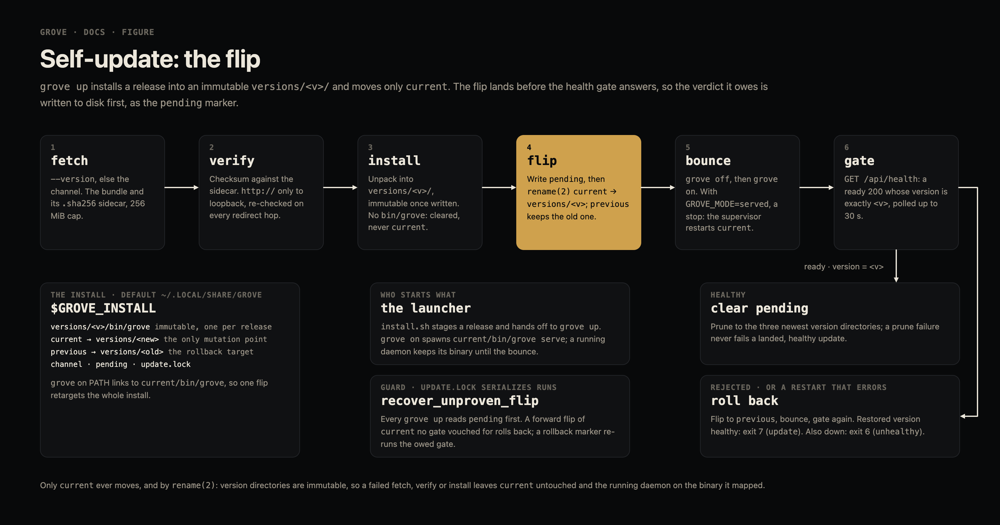

desired state vs actual state
grove cultivates git worktrees. manifest.toml
declares desired state, git on disk is actual state, and grove converges them additively —
never deleting what it did not create. One Rust workspace, one binary;
grove serve is the daemon, and every status it holds is a cache
re-derived from disk.
The root layout
Two trees under $GROVE_HOME, one entry per root in
each: roots/<owner>/<repo>/ holds everything grove owns,
code/<owner>/<repo>/ holds checkouts and only checkouts.


docs/figures/project/).Engine lanes
One engine per declared root drives convergence through that root's lane; the watcher only discovers and announces. Events, never a clock. Detail: engine.md.


Self-update
grove up installs into an immutable
versions/<v>/ and moves only current. The
flip lands before the health gate answers, so the verdict it owes is written first, as the
pending marker. Detail: updates.md.


Decisions
Shipped designs, the choice each made and why. The mechanics live in the reference docs; history is in git.
The install is not the workspace · v0.2.0, 0dd3281
Two roots with opposite lifecycles: $GROVE_INSTALL (default
~/.local/share/grove — versions/,
current, previous,
channel, pending,
update.lock) is disposable and owned by grove up;
$GROVE_HOME (default ~/.grove) is the
workspace and nothing else. Each has one resolution
(grove_ops::install_home, home), and the
launcher passes GROVE_INSTALL to a served daemon. Why: uninstall used
to delete every checkout with the binary, and a second home had to carry its own install.
uninstall.sh now removes the workspace only behind
--purge; a stale layout is the doctor finding
install-under-home, whose fix line is the four-line move.
The trunk is a branch, named by that branch · v0.2.0, ea9629a
Every checkout directory is worktrees::name_for(branch); the trunk is
the worktree the manifest's optional trunk key points at, else the
bare's HEAD. The manifest key is desired state, the bare's
HEAD actual state, and reconcile sets one from the other
(git::set_head). Changing the trunk is a manifest edit: the new trunk
checkout is ensured, shares repoint, and the old trunk stays on disk as an ordinary worktree —
no trunk change deletes anything. Why: a hidden role-named .trunk
beside branch-named worktrees was two naming schemes, and some repos integrate on a branch other
than the remote default. The wire carries trunk_branch.
Reconcile refuses a legacy or occupied root · v0.2.2, b43745e
realize never clones into a directory it does not own: a root in any
older layout is a Failed outcome naming the generation and the remedy
(grove doctor --fix), and a code dir holding anything but
.DS_Store is refused naming the entries. Migration happens only in
doctor --fix, where the operator asked for it; the error reaches
RootView.error and grove tree list, and the
doctor route nudges a migrated root to re-derive. Why: a daemon booted over sixteen pre-0.2 roots
re-cloned each beside its legacy layout — reconcile never consulted the doctor finding that
already knew.
A root holds checkouts and nothing else · v0.3.0, 99b7299
A root is a declared repo — [roots."o/r"] in the manifest,
roots/o/r/ on disk (root_dir) holding
bare/, pool/slot-N and the
cloning marker; its code dir is
code/o/r/ (code_dir). One word, one thing.
clone remove deletes both, so nothing of a root survives elsewhere;
adopt walks roots/, and checkouts without a
root are the report-only finding orphan-code. One detector
(layout::legacy) names all three layout generations and
doctor --fix migrates any of them to v3 idempotently, refusing a
half-moved root rather than guessing. The root view gains root
(shown under --verbose), and grove workspace
writes a .code-workspace of every checkout on demand. Why: grove's
private .bare and .pool sat in every editor
explorer beside the operator's checkouts, and every rule had to say "except grove's own
entries".
Open: a stopped engine must not keep writing the root
Proposed · #2. Target: a stopped engine does no further writes to its root, and status never reports a driver-owned failure over a disk that contradicts it.
Engine::stop is deliberately soft: in-flight lane work runs to
completion. The engine set's single owner closes the undeclare → redeclare race on the map, not
on the lane — a stopped engine's reconcile is still queued or running, still holds a clone
permit, and still reaches realize, which repairs a declared-but-missing
root by cloning it. Two consequences:
- A ghost reconcile re-clones a root being removed.
roots::removedeletes before it undeclares, and between the steps the root is declared and missing — exactly whatrealizerepairs. The clone finishes after the engine stops, and an undeclared code dir reappears aftergrove clone removereported it gone. degradedover areadydisk is never re-derived.apply_reconcilemaps afailedoutcome todegradedwithout reading disk; under push-only nothing fires the event that would heal it.
Approach: (1) remove undeclares first, so a ghost reads
NotDeclared and never reaches realize,
refusing or waiting while the cloning marker is held — but this inverts the live invariant
※ delete-before-undeclare, so the ordering must be settled first;
(2) stop sets a flag the lane job checks before it starts, so a queued
job never begins and never takes a permit; (3) a failed outcome over a
ready disk publishes the failure on the bus but takes disk for status.
Out of scope: cancelling grove-ops work already running, such as a clone mid-transfer.
Next
What is open, in order. Locations are symbols and
※ anchors, never line numbers.
- Settle the
removeordering before touching it. Undeclare-first inverts※ delete-before-undeclare(roots::remove, claim incrates/grove-ops/AGENTS.md, asserted bycrates/grove-daemon/tests/scenario.rs), whose rationale is that undeclaring first letsadoptre-declare a still-present bare. Pick one ordering and rewrite the claim with it; the marker isroots/<slug>/cloning(CLONING_MARKER, flock-held while a clone is live). → ghost reconcile (1). - Cancel a stopped engine's queued work at the lane head.
Engine::stoponly sendsMsg::Stop, and the reconcile lane job inDriver::dispatchcallsreconcile_onewith no stop check (a permit is taken only whendisk_statusisMissing), so a queued ghost still clones a root being removed. → ghost reconcile (2). - Let disk win over a stale
failed.apply_reconcilemapsApplied{status: failed}toDegradedwithout reading disk. A laterDerive(Ready)heals it (engine/status.rsnext_status), but under push-only nothing fires that event. → ghost reconcile (3). - Land the three ghost-reconcile tests: a stopped engine's queued reconcile does
not clone and frees its permit;
removeracingreconcile_onecannot resurrect;failedover a ready disk reportsready. None exists today. Also reword the cancellation paragraph of engine.md to say grove-ops work already running cannot be cancelled. - Work the open sweep findings, highest first.
Open sweep findings
The s-20261012T0155Z gigasweep confirmed 21 defects by probe and the s-20261019T0455Z sweep three more, all fixed on trunk. Open, highest first:
install_bundleis not atomic (confirmed, low). It runsremove_dir_all(versions/<v>)then extracts in place, even when<v>is the versioncurrentpoints at.is_under_trunkforgets the old trunk (confirmed, low). After a trunk change (main → canary), share links laid through../main/read as foreign.RootView.urlanderrorare served unredacted (plausible). The Host guard closes the remote read path; local readers still see clone URLs, including any embedded credentials.grove offchecks for any grove daemon, not this home's (plausible, medium). It can shut down another home's daemon on the same bind.- An in-flight back-off is never retried (plausible, low). A daemon booting
during an offline CLI clone reports
failed: … in flight; the CLI finishing raises no watched event, so status staysfaileduntil the next manifest change. Same shape as Next 3. - Manifest writes don't fsync (plausible, low).
write_docrenamesmanifest.toml.tmpwithout fsyncing the file or its directory. - Slugs keep their case (plausible, low).
slug_from_urlof…/Foo/barand…/foo/barmints two manifest keys that share one directory on case-insensitive APFS. version_keymisorders (plausible, low;update/layout.rs).+buildmetadata folds into the core numbers and prereleases compare by number before label (-canary.10>-rc.1). Pruning order only:currentandpreviousare protected.logs::redactcuts at the first@(plausible, low;grove-daemon/src/logs.rs),telemetry::redact_urlat the last, so a raw@in a password leaves its tail in the ring.- Only
origincounts as a branch's remote (plausible, low;git::branch_target,branch_exists). A branch living only on an operator-added remote is minted offHEAD, untracked. grove clones onlyorigin.
Unattended shifts
Sandbox denials, not regressions; gate them on a host run.
cargo nextestfails ~118 tests in the shift sandbox: those binding loopback ports (EPERM), theps-basedprocess_start_time_is_stable_for_a_live_pid, and on theciprofile the FSEvents-backedwatcher::tests::slow_an_fs_write_to_the_manifest_announces.- Coverage is measured under
shift-test(cargo llvm-cov nextest --workspace --summary-only, loopback allowed there): 93.09 % lines at the s-20261019T0455Z landing. test/install_smoke.shneeds amktempshim onPATHthat roots templates under$TMPDIR: macOSmktemp -dignoresTMPDIRand the sandbox denies/var/folders.
Reference
Present-tense descriptions of the shipped system. This page is the design and the plan; these are the mechanics.
| doc | what it covers |
|---|---|
| api.md | the HTTP surface the daemon serves |
| architecture.md | crates, desired vs actual state, reconcile |
| deployment.md | requirements, environment, served mode |
| engine.md | per-root engines, lanes, status derivation |
| updates.md | releases, channels, grove up and rollback |
| worktree-environment.md | shares and the per-worktree environment |
| worktrees.md | trunk, worktrees, pool, recovery, adoption |
| jgeschwendt/grove | the repository |
grove v0.3.0 · figures render behind mise run figures.